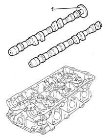
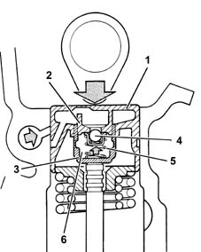
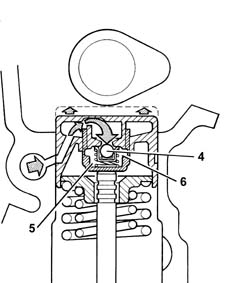
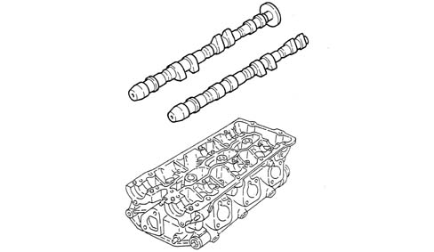
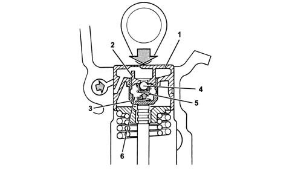
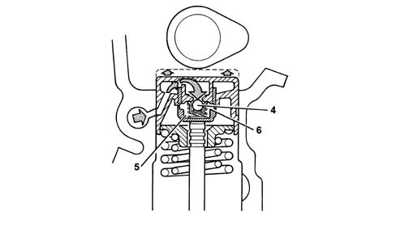

1036E camshafts (2) in cylinder heads (2)
- Path
- Descriptions > 10 ENGINE > 1036 TIMING SYSTEM > 1036E camshafts (2) in cylinder heads (2)
- Kind
- system description
- Applies to
- engines: 2.5 V6, 3.2 V6; all production periods
- Interactive page
- https://sloeber94.github.io/elrnDB-a156/en/#/3232869
Applies to: engines: 2.5 V6; all production periods
Camshafts
Two camshafts for each cylinder head (inlet - exhaust) rotate on four mounts.
Disc (1) at the rear end of the exhaust side camshaft for the right head is fitted with a reference pin for the timing sensor.

Hydraulic tappets
The hydraulic tappets automatically cancel the valve clearance during engine operation, with the advantage of reducing:
- maintenance interventions
- engine noise.
Operation in open stage
When the camshaft cam acts on the cup (1) and consequently the piston (2), the oil trapped in the chamber (6), because the ball valve (4) closes, transmits the movement of the piston (2) directly to the sleeve (3) and so to the valve. During this stage, because of the high pressure to which it is subjected, some of the oil in the chamber (6) leaks through the tiny gap between the piston (2) and sleeve (3).

Operation in closed stage
While the valve is closed, so that the tappet, pushed by the action of the spring (5), follows the profile of the cam, a vacuum is created inside the chamber (6) which causes the ball valve (4) to open, allowing oil to enter. The oil entering the chamber (6) replaces the oil which leaked out previously while the valve was open.

Applies to: engines: 3.2 V6; all production periods
CONSTRUCTION FEATURES
Camshafts
Two camshafts for each cylinder head (inlet - exhaust) rotate on four supports.
There is a disc (1) at the rear end of the exhaust side camshaft for the right head which contains a reference for the timing sensor.

Hydraulic tappets
The hydraulic tappets automatically cancel the valve clearance during engine operation, with the advantage of reducing:
- maintenance interventions
- engine noise.
Operation in open stage
When the camshaft cam acts on the cup (1) and consequently the piston (2), the oil trapped in the chamber (6), because the ball valve (4) closes, transmits the movement of the piston (2) directly to the sleeve (3) and so to the valve.
During this stage, because of the high pressure to which it is subjected, some of the oil in the chamber (6) leaks through the tiny gap between the piston (2) and sleeve (3).

Operation in closed stage
While the valve is closed, so that the tappet, pushed by the action of the spring (5), follows the profile of the cam, a vacuum is created inside the chamber (6) which causes the ball valve (4) to open, allowing oil to enter.
The oil entering the chamber (6) replaces the oil which leaked out previously while the valve was open.
